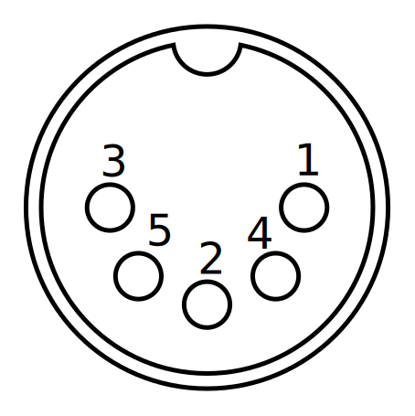

Overall, it looks quite like a spectrum 48k
There are some hardware extensions available. These include "sound and game" (one extra PIA for joysticks and a 6-bit DAC), modem, floppy controllers, serial interface (RF57, the CC90 needs some hardware patches), and vocal synthetizer. Some of them can logically be plugged together, but the single expansion port doesn't allow it. It is possible to use a flat cable as a bus for multiple extensions, or use the Megabus or Thomson MO5 expansion, both of which add some hardware and replicate 3 expansion ports.
Some share the same addresses so they can't be used together in any way.
The 6809 is a 8 bit CPU with an orthogonal instruction set and a lot of addressing modes.
comments are prefixed with ;
Addressing modes: (assuming there is $33 at address $12 and $FF at address $33)
| LDA #$12 | A = 12 (immediate) |
| LDA $12 | A = *12 = 33 (direct) |
| LDA [$12] | A = **12 = *33 = FF (indirect) |
| LDA ,X | A = *X (indexed) |
| LDA ,X+ | A = *X++ (also X++,X-, X--) |
| LDA 5,X | A = *(X+5) (offset coded on 5, 8 or 16 bits) |
| LDA [5],X | ...or anything you can come up with |
Registers: AB (or 16-bit D); CC (flags), DP (direct page pointer), X and Y (16 bit indexes), U and S (user and system stack)
Isntructions.
LDr STr nn
ADDr ADCr ANDr ASLr ASRr BITr CLRr CMPr COMr DECr EORr INCr LSLr NEGr
ORr ROLr RORr SBCr SUBr TSTr nn
ABX (add B to X)
MUL (D=A*B)
SEX (sign extend)
LEASr
DAA
EXG r,r
TFR r,r
PSH{U,S} r, PUL{U,S} r
BCC BCS BEQ BNE BGE BGT BHI BHS BLE nn
BRA nn, JMP nn, JSR nn, RTS
From the 48K of RAM, 16 are dedicated to the screen (see below). The screen memory is in two planes, and the remaining 32K are mapped linearly.
All the hardware is mapped in memory space. The memory is at the bottom, the ROMs at the top and the IO in between.
See the memory map for more info.
The screen is separated in two parts : border and actual pixel data. Both use the same color data format : 4 bits, P,B,G,R. P means 'Pastel' and is used to lighten the color, except for white which can't be lightened, you get orange instead. It does not work like on spectrum, however. Here is the palette :
| P | B | G | R | Color |
|---|---|---|---|---|
| 0 | 0 | 0 | 0 | Black |
| 0 | 0 | 0 | 1 | Red |
| 0 | 0 | 1 | 0 | Green |
| 0 | 0 | 1 | 1 | Yellow |
| 0 | 1 | 0 | 0 | Blue |
| 0 | 1 | 0 | 1 | Magenta |
| 0 | 1 | 1 | 0 | Cyan |
| 0 | 1 | 1 | 1 | White |
| 1 | 0 | 0 | 0 | Grey |
| 1 | 0 | 0 | 1 | Pink |
| 1 | 0 | 1 | 0 | Light Green |
| 1 | 0 | 1 | 1 | Chicken Yellow |
| 1 | 1 | 0 | 0 | Light Blue |
| 1 | 1 | 0 | 1 | Parma Pink |
| 1 | 1 | 1 | 0 | Light Cyan |
| 1 | 1 | 1 | 1 | Orange |
To set the border color, you have to use PIA port A, bits 4..1.
The pixel data is mapped as two overleayed pages at address 0..1FFF. You must select color or pixel page by writing 0 or 1 to PIA port A, bit 0. Note there are some free bytes at the end of both pages (see the memory map for more details). In the color area, the data for each pixel is stored as two P,B,V,R nibbles, one for foreground, and the other for background. At the same adress, but switching to the other page, you can set the pixel data for the same position.
The hardware is quite restricted and can't do much.
The PIA is used to access the tape port, the buzzer, keyboard and set the screen border color.
The Gate Array does all the video timing generation. Unfortunately, there isn't any way to control that. No overscan, no weird video modes, no page flipping. The only interesting thing is a register allowing to read the electron beam position at the last lightpen hit.
The keyboard matrix is scanned using PIA port B. Bits 1, 2 and 3 select a column, bits 4, 5 and 6 select a line, and bit 7 reads the state of the selected key.
Internally, the column is selected with a 74LS56 demultiplexer, and the line is selected with a 74LS151 multiplexer (PB7 is the output of this one).
| N | eff | J | H | U | Y | 7 | 6 |
| , | ins | K | G | I | T | 8 | 5 |
| . | back | L | F | O | R | 9 | 4 |
| @ | right | M | D | P | E | 0 | 3 |
| space | down | B | S | / | Z | - | 2 |
| X | left | V | Q | * | A | + | 1 |
| W | up | C | raz | ent | cnt | acc | stop |
| shift | basic |
The first thing to notice about the tape drive is the connector use a non-standard pinout. It is as follows (computer connector viewed from outside):
Notice the "audio" pin. This one is wired straight to the audio amplifier and then to the SCART connector. On the (stereo!) tape drive, one track is data, and the other is audio. This means you can get a musical tape loader for free!
All the other pins work on TTL levels. All the analogue signal handling is done in the tape drive to avoid interferences over the wires. This means this port can be used very easily as GPIOs, some pins an even be used in both directions.
If you try to access the tape drive without plugging it in, you get an error 60 from BASIC. The detection is done by looking for a logical high level on the tape input.
Motor ON is wired to PIA Control A pin. Tape IN/OUT are PIA port A bits 7 and 6.
The default encoding is an MFM variant. A 0 bit is made of a 830 microsecond constant level (either 1 or 0) without change. An 1 bit is made of two consecutive levels (0 then 1 or 1 then 0) with durations of 411 and 422 microseconds (notice 1 bits are slightly longer!). so a bit always start with a level change, then the reading routine waits for 548 microseconds and reads the line again. If the state changed since the last read, it's a 0, else it's a 1 (and there were two state changes).
Of course it is possible to work with shorter timings. The tape audio quality is the limiting factor, along with the filtering done in the tape drive. Working with newer media solves this and allows reaching much faster rates.
Files on tape are stored as blocks.
The data is structured depending on the block type
| Offset | Contents |
|---|---|
| 0 | Block type = 0: start block |
| 1 | Block length (0x10) |
| 2..C | File name and extension (no dot, space padded) |
| D | File type (00 BASIC, 01 Data, 02 binary, ...) |
| E | File mode (00 binary, FF text) |
| F | File mode (again?) |
| 10 | Checksum (256-sum of [2..F]) |
| Offset | Contents |
|---|---|
| 0 | Block type = 1: data block |
| 1 | Block length including length and checksum (0 = 256 bytes, 1 = invalid (?), 2 = 2 bytes (no data), 3 = 3 bytes (1 data byte), ...) |
| 2..L | File data (0 to 254 bytes) |
| L+1 | Block checksum (256-sum of [2..L]) |
All data blocks usually have a length of 256, except the last one. This is not mandatory.
| Offset | Contents |
|---|---|
| 0 | Block type = FF: end block |
| 1 | Block length = 2 |
| 2 | Checksum (always 0) |
Notice for binary files, after decoding hte blocks, there's still a logical header system that specifies load address and file size. There can be multiple logical chunks in the same file, each with an header. The last chunk is similar to the last block, but both must be present.
{% include_relative footer.html %}